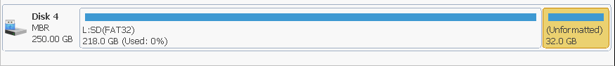

Partitioning the SD Card
This will delete everything on your sd card
Doing this will delete all your data from your sd card, be warned!
Make sure you get the right drive
Make sure you pick your SD card while following thse steps, and not some other drive. if you pick the wrong drive that drive will be deleted instead, be warned!
Backing up your existing Nintendo folder
Before we start, if you are using a microSD card already as a storage device for your games, you will want to back up your Nintendo folder that is on the root of your microSD card to a safe place on your computer. This folder contains your games and saves.
Windows Instructions
What you need (Windows)
Instructions (Windows)
- Install and open MiniTool Partition Wizard.
- Click the
Disk & Partition Managementbutton. - Find your SD card and delete the volume on it by right clicking on the partition and pressing delete (This will delete all your data on your SD card!)
-
Create a new partition by right clicking on the unallocated space and then pressing
Createwith the following instructions:- Set the
File SystemtoFAT32. - Set the
Partition LabeltoSD. -
Drag the right arrow of the partition completely to the left till the
Unallocated Space Afteris almost at 31 GB or 31000 MB -
The final
Partition Sizeof the FAT32 partition will vary depending on your SD card's total size.
- Set the
-
Create another new partition with the following settings:
- Ignore the warning about Windows not being able to recognize the partition.
-
Set the
File SystemtoUnformatted.
-
Your SD card now should look similar to this:

-
Apply the changes to your SD card by hitting
Applyin the top left.
you can watch my video of myself do my sd card partitioning.
Continue to SD Preparations
Linux Instructions
SD card identification
Make 100% sure you get your microSD card during the following steps. If you are not careful, you can end up wiping your entire linux filesystem. We are not responsible for data loss when doing this.
What you will need (Linux)
- The latest version of
gparted - The latest version of
fdisk - Access to an administrator account.
Instructions (Linux)
- Open a terminal.
- Run
sudo fdisk -l. Enter your password if prompted. This will print information about all drives connected to your computer. Use the information about the file size to identify your microSD card. Specifically, take note of the line afterDisk. This will look something like/dev/xxx, wherexxxwill differ on your system (can also be longer than three characters). It does NOT end with a number. - Run
sudo gparted <value>. Enter your password if prompted. Replace<value>in the command with the information you obtained from step 2. - You will see a list of partitions on your SD card. Go to
Device->Create partition table. Selectmsdosas the partition type and select Apply. This will remove all existing partitions from your SD card. -
Go to
Partition->New. And do the following:- Set
Free space following (MiB)to30000. - Set
Free space preceding (MiB)to1. - Set
File systemtofat32. - Set the
LabeltosMicroSD. -
Leave everything else untouched and select
Add.
- Set
-
At the top part of gparted, you will now see a large gray space to the right. Right click this space, select
New. - Set
File systemtolinux-swap. SetLabeltoemuMMC. Leave everything else untouched and selectAdd. - Click the check icon in the toolbar.
- Wait for all operations to succeed. This might take a while.
- Close
gparted.
NOFAT error in Hekate
This error might occur after preforming the previous steps if you are using a 64GB microSD. The reason for this is that Hekate expects the FAT32 partition to use a 32k cluster size, which gparted only does by default if the partition is larger than 32GB, which it likely won't be on a 64GB microSD. This will wipe all the data on your FAT32 partition.
To fix this, follow these instructions:
- Open a terminal.
- Run
sudo fdisk -l. Enter your password if prompted. This will print information about all drives connected to your computer. Use this information to determine the FAT32 partition on your SD card. Specifically, note the value under the columnDevice. This will look something like/dev/xxx, wherexxxwill differ on your system (can also be longer than three characters). It always ends with a number! - Run
sudo mkdosfs <value> -s 64 -F 32 -I. Enter your password if prompted. Replace<value>with the value you got from step 2. - Wait until it finishes running. Depending on the size of your microSD card, this might take a while.
- Run
sudo fatlabel <value> "sMicroSD". Enter your password if prompted. Replace<value>with the value you got from step 2.
Continue to SD Preparations
macOS Instructions
SD card identification
Make 100% sure you get your microSD card during the following steps. If you are not careful, you can end up wiping the wrong disk. We are not responsible for data loss when doing this.
What you will need (macOS)
- Access to an administrator account.
Instructions (macOS)
- Open Terminal at
/Applications/Terminal.app. - Run
diskutil list. This will print information about all drives connected to your Mac. Use the information about the disk size to identify your microSD card. Use the device name such as/dev/disk#when partitioning the microSD card. - Run the following command to partition the disk. Ensure that the device name is replaced with the one for your disk.
diskutil partitionDisk disk# MBR ms-dos SMICROSD R ms-dos EMUMMC 61124608S